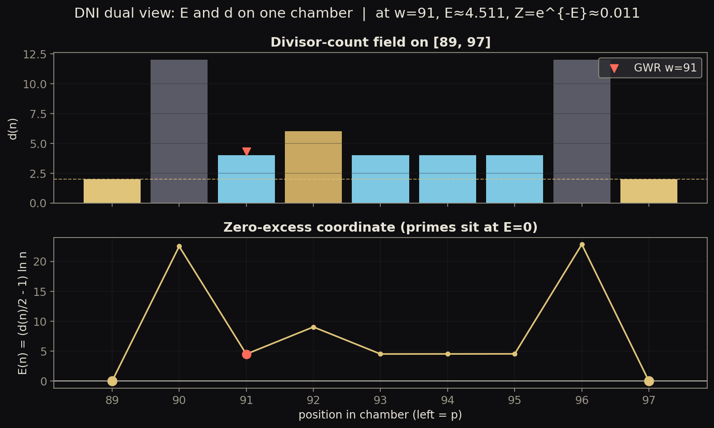

mixed
Dual d(n) and zero-excess E(n) field
Pedagogical illustration of the Divisor Normalization Identity coordinate E(n)=(d(n)/2-1)ln n on one toy chamber. Primes are the zero-excess integers for n>1 under that coordinate. Not a new theorem claim and not a high-scale surface.

- Regime
- single toy chamber default p=89, q=97
- Claim language
- weak
- Reproduce
visualizations/library/.venv/bin/python visualizations/library/entries/dual-e-z-field/demo.py- Chapter refs
PROOF.mddocs/RESULTS.mdresearch/02-gwr-dni/
- Tags
Observable object
Take one concrete gap, for example from 89 to 97. Draw divisor counts as bars. Underneath, draw the zero-excess score
E(n) = (d(n)/2 - 1) ln n.
Mechanism
Primes are exactly the integers with d(n)=2, which forces E(n)=0. Composites lift above zero excess. Minimizing E on the interior is the same selection problem as maximizing Z=e^{-E} or maximizing F=-E.
Project terms
- DNI: Divisor Normalization Identity.
- Zero excess: prime-centered coordinate used throughout PGS.
- GWR witness: marked on both panels as the leftmost minimum-divisor interior point.
Status and limits
- Status: mixed (toy illustration of the DNI coordinate identity and GWR selection; theorems live in
PROOF.md). - Regime: one small gap. Not an evidence ladder.
- Dual coordinate
Zis an exact reformulation, not a separate law.